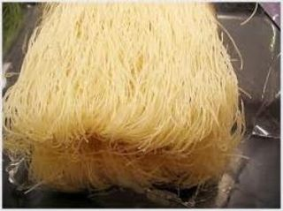
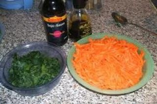
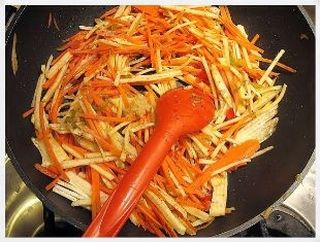
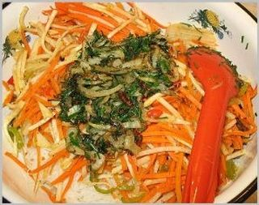

Шаг 1: берем лапшу.

По своей сути "Фунчеза" - это просто название крахмальной или рисовой лапши в Корее. Разнообразные салаты на основе данной фунчезы есть и у корейцев, и у китайцев, и у японцев, и даже у вьетнамцев. Данный рецепт является по сути Дунганским вариантом приготовления этого великолепного салата. Берем кастрюлю, наполняем его холодной водой и ставим на сильный огонь. Чтобы ускорить процесс закипания воды можете накрыть кастрюлю крышкой. Через минут 5-8 вода в кастрюле должна уже закипеть, поэтому берем лапшу длинную (обычно такую можно купить в крупных супермаркетах) и опускаем в воду вариться. Чтобы не переварить лапшу, варим ее в кастрюле 4-5 минут. Лапша в готовом виде приобретает сероватый цвет и становится почти прозрачной. Кстати по поводу прозрачности - есть лапша, которая после варки становится действительно прозрачной, но, увы, ее не так легко найти. Когда лапша сварится, откидываем ее на дуршлаг и промываем холодной водой, отжимаем и выкладываем в глубокую миску. Лапшу стоит обязательно промывать, иначе она у нас слипнется и превратится в комок из теста.
Шаг 2: берем овощи и мясо.

Берем коллераби и морковку и нарезаем их соломкой. Таким же образом нарезаем джусай и острый перец. Все пересыпаем в отдельные миски. Берем мясо и нарезаем его на небольшие кубики. Когда мясо уже все порезано - берем среднюю сковороду, наливаем туда немного масла и ставим мясо жарится на умеренный огонь. Мясо не забываем постоянно помешивать деревянной лопаткой во избежание его пригорания. Минут через 10-13 мясо будет уже готово и его можно будет переложить в миску с лапшой.
Шаг 3: обжариваем овощи.

Теперь ставим небольшую сковороду на средний огонь, разогреваем на ней растительное масло. Когда масло разогреется бросаем в него порезанный ранее перец, при помощи чеснокодавилки выдавливаем в сковороду выдавливаем чеснок, добавляем сюда же 1 чайную ложку острого перца Чили, из миски высыпаем в сковородку порезанное коллераби с морковкой, все солим немного и перчим. Все это нужно обжарить на большом огне 3-4 минуты постоянно перемешивая лопаткой. После этого высыпаем поджаренные овощи в миску с лапшой и мясом.
Шаг 4: обжарка лука с зеленью.

На доске режим мелко лук репчатый, затем высыпаем его в сковородку, где жарилось мясо и через 1-2 минуты, когда лук приобретет золотистый цвет добавляем джусай. Все это вместе немного обжариваем постоянно перемешивая и высыпаем в миску с лапшой, овощами и мясом. Добавляем сюда немного соевого соуса и уксуса по вкусу. Затем тщательно все перемешиваем ложкой либо руками. Кому как удобнее.